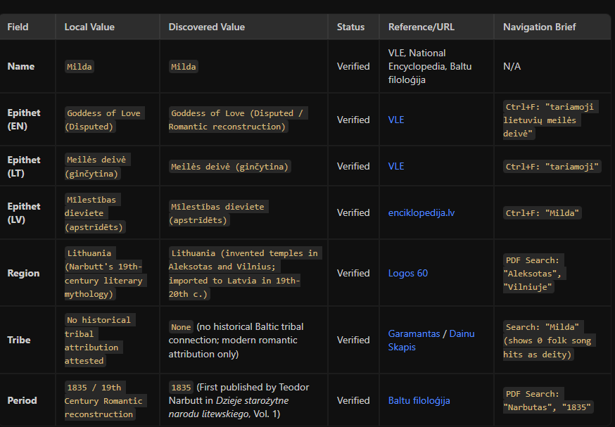

Gods, agents and confidence levels
Reusing orchestrated agent workflows across AI tools
My AI Journey
Engineering Manager & AI experimenter
- 10+ years in IT as an Engineering Manager.
- 3 years of AI prototyping: built over a hundred agents.
- Author: wrote an early book on applying AI without sacrificing software quality.
- Prototypes: built a baltic mythology research site and a D&D soundboard/ambience mixer.
Perkūnas: AI vs. Mythology
Looking good is not the same as being correct
- Perkūnas: Baltic god of thunder, sky, storms, rain, and war.
- AI-Generated Image: Shows him riding a carriage pulled by three goats, holding an axe.
- The Historical Reality:
- Goats were sacrificed to Perkūnas; he doesn't ride them. - He traditionally wields a sword, not an axe.
- Key Lesson: Visually appealing outputs from AI can be factually wrong.
The Historian's Dilemma
Manual research is tedious and boring
- Baltic mythology records are stored in primitive, scattered sites.
- Details are often inconsistent between Latvian and Lithuanian sources.
- Manual verification is boring, repetitive, and time-consuming.
- Question: Can we automate this research and fact-checking flow?
Initial Phase: Heavy Agents
Monolithic configurations with duplicate logic
- Browser Researcher: Google search and data gathering. - Editor: Compares findings with repository and flags issues. - FE Developer: Implements UI display.
- Flow instructions duplicated across all 4 agents. - Inconsistent orchestration (sometimes subagents spawn, sometimes not).
Shifting from Agents to Skills
Decoupling identity from action sequences
- Agents: Define who they are, their persona, and what tools they can access.
- Skills: Define how a specific task is orchestrated.
- Split the monolithic logic into two reusable Skills:
1. Fact Check Skill — verifying existing content. 2. Research Skill — discovering and verifying new concepts.
The Fact Check Skill
Parallel search and automated PDF analysis
- Spawns two parallel Browser Researchers:
- Researcher 1: Searches Lithuanian (LT) resources. - Researcher 2: Searches Latvian (LV) resources.
- Reads and parses public PDF files for deep historical context.
- Generates a structured comparison and confidence table.
Fact Check Results
Real verification table generated by the skill

The Research Skill
Synthesizing and building new interfaces
- Parallel Discovery Phase:
- LLM Researcher: Synthesizes creative ideas and outlines. - Browser Researchers: Cross-reference and verify.
- Editor Agent: Flags structural conflicts. - FE Dev Agent: Implements the user interface automatically.
The Multitool Headache
The pain of configuration divergence
- Using multiple AI tools for different purposes:
- GitHub Copilot (cheap prototyping and completions). - Gemini & Antigravity (quick fixes and research).
- 5 agents + 2 skills = 7 configs. - Duplicated across .github, .gemini, and .antigravity folders. - 15 files to maintain manually! Updates became inconsistent.
The Solution: Symlinks
Single source of truth across all tools
- Move all agent and skill definitions to a central
.ai/ folder. - Create symbolic links in each tool's configuration directory:
``bash .ai/agents -> .gemini/agents .ai/skills -> .gemini/skills # Same symlinks for .antigravity and .github ``
- Unified Frontmatter: Mixed frontmatter fields are gracefully parsed; tools ignore keys they don't recognize.
Tool Quirks & Frontmatter
Handling differences between LLM clients
- Strict validator; crashes on unknown frontmatter fields. - Fix: Keep configs lean and rely on sensible defaults.
- Powerhouse; supports 20+ frontmatter fields for advanced steering.
- Strategy: Design for the lowest common denominator, or use a pre-process script if needed.
My Reusable Skill Library
My personal toolbox carried across projects
- markdown-to-slides: Compiles outlines into interactive decks (like this one!).
- agent-designer: Structures multi-agent architectures.
- skill-writer: Auto-generates schemas and guides for new skills.
- ci-cd-pipeline-builder: Fast quality gate setup.
- commit-writer: Enforces semantic commit messages.
- improving-agent: Refines skills when errors are found.
Key Takeaways
How to build trust and efficiency with AI
- > Automate the boring stuff, but never trust AI blindly.
- Use multi-lingual browser searches and PDF scraping to fact-check.
- Centralize your agent/skill logic in
.ai/ and use symlinks to sync across Copilot, Gemini, and Claude.